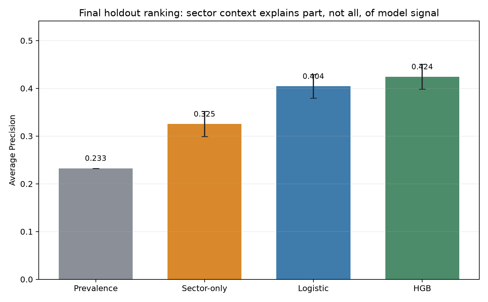

Business Analytics Research Project
Regional Entrepreneurship Intelligence
Predicting Where Startup Activity Falls Behind Regional Economic Opportunity
MSA × Industry × Year
2010–2023
Opportunity Entrepreneurship
Economic growth creates opportunity, but opportunity does not automatically translate into entrepreneurship. This project asks whether historical regional and industry conditions can help identify where startup activity is most likely to fall behind a model-based expectation three years later. The goal is not to diagnose a market from a score. It is to focus limited analytical attention.
Open with the opportunity-response tension. Name the three-year prediction horizon. Frame the output as prioritization, not diagnosis.
The problem
Economic opportunity and entrepreneurial response do not always move together.
Industry opportunity ↑ Economic activity + jobs ↑
Expected response
Entrepreneurship keeps pace Observed response
Response trails expectation
What happens when a regional industry is growing, but local entrepreneurial activity is not keeping pace with what we would expect?
The central problem is a mismatch. A regional industry may add jobs or economic activity without producing the entrepreneurial response we might expect under similar historical conditions. That is a predictive association, not a causal claim. The practical challenge is deciding which of thousands of regional-industry combinations deserve closer investigation.
Describe mismatch, not failure. Avoid causal language. Move from thousands of cases to prioritization.
Research question
Can historical regional-industry conditions predict whether startup activity will fall below its expected level three years later?
Thousands of markets Limited analyst time Prioritized review
A score can direct attention. It cannot allocate funding or replace local investigation.
The research question is deliberately narrow: can information available today rank the risk that a model-relative entrepreneurial gap appears three years later? Economic-development organizations cannot investigate every market equally. A useful system would narrow the field while preserving human judgment. It would not automatically allocate funding, label a place as failing, or explain the cause of a gap.
Emphasize prediction at t plus three. Explain the capacity constraint. Draw a firm boundary around automated decisions.
Conceptual framework
Entrepreneurial alignment compares response with context-specific expectation.
1 Economic
→
2 Expected
↘
compare Entrepreneurial
→
5 Potential
3 Observed response
↗
The expectation changes with historical regional and industry conditions; it is not one national target for every place.
The framework has two paths. Historical opportunity and context generate an expected entrepreneurial response. Actual startup activity supplies the observed response. Their difference is entrepreneurial alignment. A materially negative difference becomes a potential gap. This avoids assuming that every industry or metro should produce the same startup rate. The benchmark is conditional and model-based.
Walk the two paths into the comparison. Define entrepreneurial alignment once. Stress context-specific expectations.
Data and unit of analysis
One row = MSA × 2-digit NAICS industry × year
BDS Startup activity
QCEW Employment and
ACS Demographic and
CBP Establishment
→
Analytical panel July 2023 CBSA geography
63,577 observations
381 metropolitan areas
19 sectors
2010–2023 study period
The production panel contains 63,577 metro-industry-year observations across 381 metropolitan areas, 19 two-digit sectors, and 2010 through 2023. Business Dynamics Statistics provide startup activity; QCEW captures industry employment conditions; ACS adds regional demographic and labor context; and County Business Patterns adds establishment context. Sources are harmonized to July 2023 CBSA geography and the 2022 NAICS analytical standard.
Define the row before the sources. Give the four scope numbers. Keep harmonization detail secondary.
Defining the outcome
The gap is the lower tail of entrepreneurial alignment.
Alignment = Observed startup rate − Expected startup rate
training p20 materially negative
Potential gap Approximately meets / exceeds expectation
Model-relative: not an administrative designation, causal diagnosis, or judgment that an ecosystem is “failing.”
Entrepreneurial alignment is observed startup activity minus expected startup activity. Positive or near-zero values approximately meet or exceed expectation. A potential gap is materially negative: below the twentieth percentile of residuals learned only from the training fold. That p20 rule identifies the lower tail without using future information. The label is model-relative. It is not a causal diagnosis, an administrative designation, or a judgment about ecosystem quality.
Say the equation in plain English. Explain p20 as the lowest training-fifth. State the model-relative caveat clearly.
Leakage-safe prediction design
Conditions at t predict a gap at t + 3 .
2010–2017 development predictor years
2018–2020 final holdout predictor years
+3 years
2021–2023 reserved target years
Expected model learned inside training data Gap threshold learned from training residuals Scaling learned from training rows Future benchmark covariates excluded
Future information never flows backward into the predictor set.
Every prediction uses conditions at time t to evaluate a gap three years later. Development predictor years run from 2010 through 2017. The reserved final holdout uses predictor years 2018 through 2020 and target years 2021 through 2023. Within each validation fold, the expected-rate model, residual threshold, and feature scaling are learned from training rows only. Future benchmark covariates are excluded. This is what leakage-safe means here: future information never moves backward.
Trace t to t plus three. Separate development and final holdout. Translate leakage as future information moving backward.
What exploratory analysis taught us
Growth matters, sector matters more, and persistence is mostly between markets.
01 Growth: related, but weakly +0.175 pp startup-rate difference for a 5-point employment-growth difference
Coefficient 3.502 per 1.0 decimal growth 02 Sector: substantial structure Industry identity accounts for much more explanatory structure than growth alone
03 Persistence: mostly between 0.690 pooled0.077 within-panel
year-to-year deviations within the same market are far less persistent
Three findings shaped the modeling. First, employment growth is related to startup activity, but weakly: a five-percentage-point growth difference corresponds to about 0.175 startup-rate points. Second, sector controls explain much more structure than growth alone. Third, the pooled lag correlation is 0.690, but within the same MSA-industry it is only 0.077. Stable differences between markets dominate year-to-year persistence. A null simulation was approximately negative 0.085, so I do not describe 0.077 as zero.
Translate 3.502 into the five-point effect. Make sector the bridge to benchmarking. Contrast pooled 0.690 with within 0.077. If asked: null simulation about -0.085.
Modeling strategy
First estimate expectation. Then predict future gap risk.
Stage 1 Expected startup activity OLS benchmark
→
Leakage-safe training residual p20
→
Stage 2 Future gap risk Logistic Regression HGB sensitivity check
Why Logistic remains primary: preselected, interpretable, and competitive across temporal development.
The workflow has two stages. OLS first estimates expected startup activity and creates the leakage-safe gap label from training residuals. Logistic Regression then predicts whether that gap appears three years later. HistGradientBoosting, or HGB, tests whether nonlinear structure improves ranking. Logistic remains primary because it was preselected, interpretable, and competitive across development. Random Forest was evaluated earlier but is not central to the final decision.
Separate expectation from risk prediction. Name Logistic as primary before results. Present HGB as a sensitivity model.
Final temporal holdout · Logistic Regression
The model creates a useful risk ranking, not perfect classification.
0.404 Average Precision vs 0.233 natural prevalence
0.692 ROC-AUC moderate separation
1.99× top-decile lift risk concentration
AP ranks a relatively uncommon outcome.
ROC-AUC separates higher- and lower-risk cases.
Lift shows concentration in the selected group.
Probability error remained moderate: Brier score 0.164 .
On the final temporal holdout, Logistic Regression reached Average Precision of 0.404 against a 23.3 percent prevalence baseline. That means it ranked the minority outcome substantially better than the natural benchmark; AP is not accuracy. ROC-AUC of 0.692 indicates moderate separation. The highest-risk decile contained gaps at 1.99 times the overall rate. Probability error remained moderate, with a Brier score of 0.164. The model is useful for ranking, not perfect classification.
Lead with AP versus prevalence. Say AP is not accuracy. Translate AUC, lift, and Brier. Return to useful ranking.
Selection discipline
HGB improves holdout AP modestly—but not enough to satisfy the full switch rule.
Logistic 0.404 95% CI 0.380–0.429
HGB 0.424 95% CI 0.398–0.450
HGB − Logistic +0.020 95% CI +0.006 to +0.034
48.7% of draws exceed practical +0.02 HGB wins 2 of 3 development folds Pooled development advantage ≈ +0.004 Logistic remains primary
HGB reached AP of 0.424 versus Logistic at 0.404. The paired MSA-cluster bootstrap difference is positive, with a 95 percent interval from 0.006 to 0.034. But the predeclared switch rule was stricter than statistical separation. Only 48.7 percent of draws exceeded the practical plus-0.02 threshold, HGB won two of three development folds, and its pooled development advantage was about 0.004. Therefore Logistic remains primary.
Acknowledge the positive holdout difference. Distinguish statistical from practical criteria. Explain why the primary model does not switch.
How much is just the industry?
Sector is powerful. Regional and historical information still adds signal within sector.
Natural prevalence 0.233
Sector-only 0.325
Logistic 0.404
HGB 0.424
+0.079 AP Logistic over sector-only 17 / 17 evaluable sectors beat their
A sector-only benchmark reaches AP of 0.325, well above the 0.233 natural prevalence. Industry identity clearly matters. Logistic reaches 0.404, an incremental 0.079 with a cluster-bootstrap interval from 0.061 to 0.098. It also beats sector prevalence in all 17 evaluable sectors. So sector carries substantial information, but regional and historical features add meaningful ranking among places within the same industry. AP is not additively decomposed into shares explained.
Give sector credit first. Quantify the +0.079 increment. Use 17 of 17 as the within-sector evidence. Do not call the difference “percent explained.”
A practical screening rule
Review the highest-risk 10% as a focused early-warning queue.
For every 100 priority cases reviewed ≈46 realized gaps · ≈54 non-gaps
1,031 cases reviewed
476 realized gaps
46.2% precision
19.9% recall
1.99× lift
1.17 false positives / true positive
Focused, not comprehensive: the queue captures about 20% of all realized gaps.
The most defensible practical rule is to review the highest-risk ten percent. That creates a queue of 1,031 cases, including 476 realized gaps. In plain terms, of every 100 priority cases reviewed, about 46 meet the eventual gap definition and 54 do not. Precision is 46.2 percent, lift is 1.99 times, and there are 1.17 review cases that do not become gaps per true gap. Recall is only 19.9 percent, so this is focused, not comprehensive.
Start with the 100-case translation. Define precision and recall after plain English. Call non-gaps additional-review cases. Stress that 80% of gaps remain outside the queue.
Coverage matters as much as performance
The model scores 85.2% of candidate holdout cells—and abstains on the rest.
10,304 scoreable · 85.2%
1,787 abstain · 14.8%
12,091 candidate MSA-industry-year cells
Exclusion rate by MSA size Small 17.3%
Middle 10.7%
Large 6.6%
AP 0.404 applies to the population the model can score. Abstention is not a negative prediction.
Performance must be paired with coverage. Of 12,091 candidate holdout cells, 10,304 are scoreable: 85.2 percent. The remaining 14.8 percent are insufficient-data model abstentions, not negative predictions. Exclusion is uneven: 17.3 percent for smaller metros, 10.7 percent for the middle group, and 6.6 percent for large metros. Excluded rows also tend to have lower startup activity and missing population or control information. AP 0.404 applies only to scoreable cases.
Lead with 85.2% coverage. Use “insufficient-data abstention.” Show the size gradient. Bound the performance population.
Holdout shift and limitations
Gap prevalence rose, even though observed startup activity also increased.
Development 19.1% gap prevalence
→ Holdout 23.3% gap prevalence
Sector and MSA-size composition explain little of the increase.
A benchmark-relative temporal shift—not evidence of a simple decline in entrepreneurship.
Model-relative outcome Prediction, not causation Complete-case abstention 2-digit NAICS Three-year horizon Pandemic-era holdout Calibration varies at extremes Weaker small-market coverage
Gap prevalence rose from 19.1 percent in development to 23.3 percent in the holdout. Yet observed startup activity also increased, and sector or MSA-size composition explains very little of the prevalence increase. This is a benchmark-relative temporal shift, not a simple decline in entrepreneurship. Other limits remain: the outcome is model-relative, the design is predictive rather than causal, complete-case rules create abstention, sectors are aggregated, the horizon is fixed at three years, and the holdout spans pandemic and post-pandemic conditions.
Pair prevalence increase with startup increase. Reject the simple decline interpretation. Keep limitations concise and concrete.
Live demonstration
From Research Model to Decision Support
One market. One industry. One question.
Static fallback · actual current application Pittsburgh, PA Arts, Entertainment, and Recreation 14 observed years 4 comparable gap years 3 holdout prediction records Open local dashboard ↗ Local route validated · deployed URL unavailable For the demonstration, I select Pittsburgh and Arts, Entertainment, and Recreation. First, I show the 14-year observed startup history and the four years with comparable expected-rate context. Second, I show the fixed three-year evaluation score, making clear that it is retrospective, not a live forecast. Third, I check data availability and confidence. The takeaway is whether this market merits deeper review—not why the pattern occurred or what intervention to fund. If the app is unavailable, this screenshot preserves the walkthrough.
Select Pittsburgh. Select sector 71. Show history, then fixed holdout score. Check coverage and confidence. End with “investigate, do not diagnose.”
What the evidence supports
Opportunity does not automatically become entrepreneurship.
Supported Future model-relative gaps contain predictable structure Sector carries substantial information Regional history adds within-sector signal Risk rankings can support targeted review High-risk cases concentrate realized gaps Reasonable later-period generalization among eligible rows Not supported Growth causes entrepreneurship A high score explains why a gap occurs Every MSA-industry can be scored A high score automatically warrants funding The model is a current national forecast Prediction replaces local judgment The model identifies where to look—not what intervention to make.
Prediction → Prioritization → Human Investigation
The evidence supports a disciplined but bounded conclusion. Future model-relative gaps contain predictable structure. Sector matters substantially, and regional history adds signal within industries. Risk rankings can create a focused review queue among eligible observations. The evidence does not establish causation, explain why a gap occurs, score every market, or justify automatic funding. Opportunity does not automatically become entrepreneurship. The model identifies where to look—not what intervention to make.
Separate supported from unsupported claims. Return to the opening tension. End on the decision boundary.
Backup B1
Detailed final holdout model comparison Model AP ROC-AUC Brier Role Logistic Regression 0.404 0.692 0.164 Primary HistGradientBoosting 0.424 0.708 See artifact Sensitivity Sector-only 0.325 — — Benchmark Natural prevalence 0.233 — — Baseline
Backup B2
Bootstrap uncertainty preserves geographic clustering. Resample MSAs → Keep each MSA’s rows together → Recompute paired AP → Summarize percentile intervals
Inference target: HGB AP − Logistic AP on the same holdout resamples.
The paired cluster design respects dependence among sectors and years within a metropolitan area.
Backup B3
Why pooled persistence overstates within-market stability 0.690 pooled lag-1
0.077 within-panel lag-1
≈ −0.085 simulated null
Stable differences between markets are not the same as persistent annual deviations within a market.
Backup B4
The review threshold trades reach for workload. Rule Workload Precision Recall Lift Top 10% 1,031 46.2% 19.9% 1.99× See reports/tables/a6_decision_rule_comparison.csv for all evaluated rules.
Threshold choice is a capacity decision, not a universal optimum.
Backup B5
Sector prevalence differs, so within-sector ranking is the harder test. 
Logistic exceeded the sector-specific prevalence benchmark in all 17 evaluable sectors.
Backup B6
Complete-case requirements produce structured abstention. More likely scoreable Larger MSAs Complete population controls Richer historical coverage More likely excluded Smaller MSAs Lower observed startup activity Missing population or control data No score is not evidence of low risk.
Backup B7
The presentation traces to frozen Assignment 6/7 artifacts. Federal source files → Versioned panel → Frozen predictions → Dashboard layer → Presentation
63,577 analytical rows
0 duplicate analytical keys
0 reviewer-fixture foreign-key violations

 Static fallback · actual current application
Static fallback · actual current application